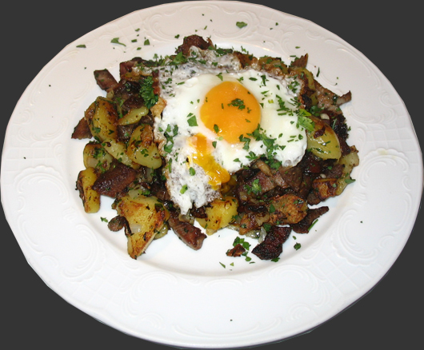
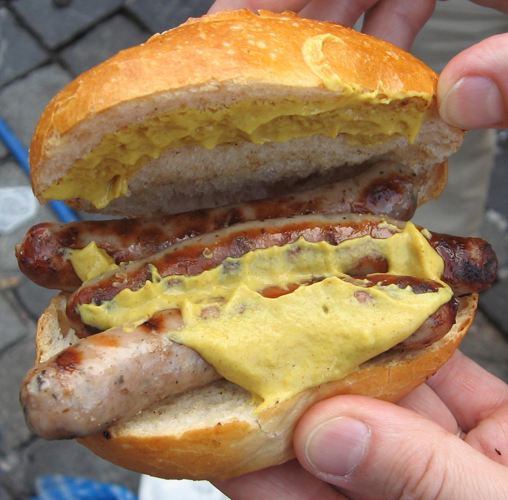
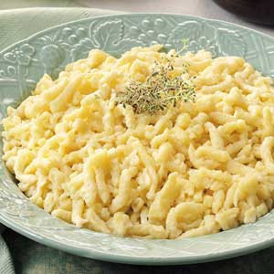

Currywurst
Home Wurst, covered in curry sauce(currypowder onions tomato puree white wine ) served on a tray, with fries or saurcraut, and with a currywurst fork.
Wurst, covered in curry sauce(currypowder onions tomato puree white wine ) served on a tray, with fries or saurcraut, and with a currywurst fork.
German Food.
Click on the item of food you like to see more information about it.
Grostel big in Bavaria and Austria(Tyrol), fried Potatoes, Onions, ham, left over meat, herbs(parsley), and a fried egg. Known in some places as Farmers plate.
Wurst, covered in curry sauce(currypowder onions tomato puree white wine ) served on a tray, with fries or saurcraut, and with a currywurst fork.
 Weiner schnittzel Pork battered to a pulp, covered in breadcrumbs cooked and served with fries with lemon and a choice of sauces.
Weiner schnittzel Pork battered to a pulp, covered in breadcrumbs cooked and served with fries with lemon and a choice of sauces.
Bavarian Bratwurst served with a a bap with mustard or withchoice of saurcraut, fries or potaoes.
Spaetzle a german pasta and egg dish, from the swabia area of southern germany.